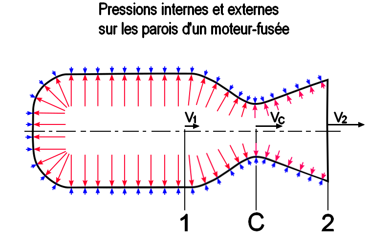
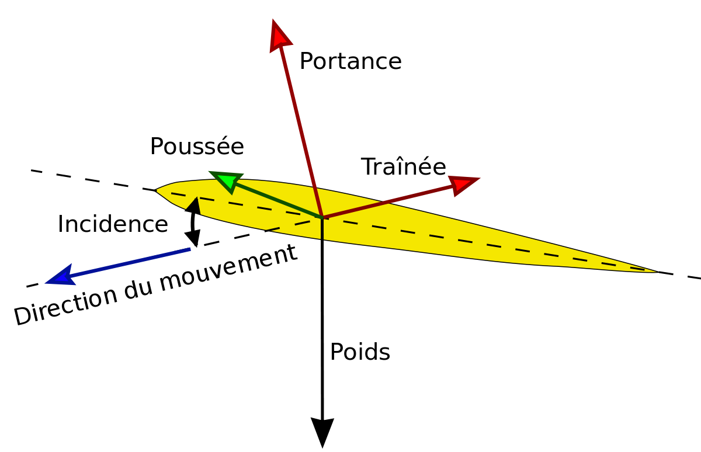
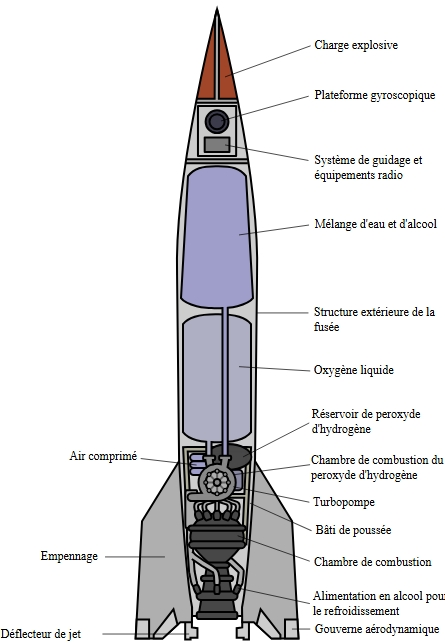
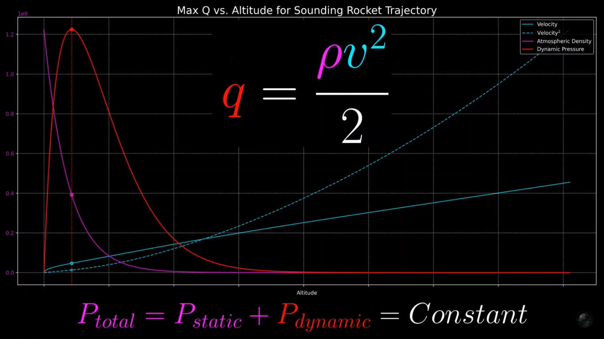
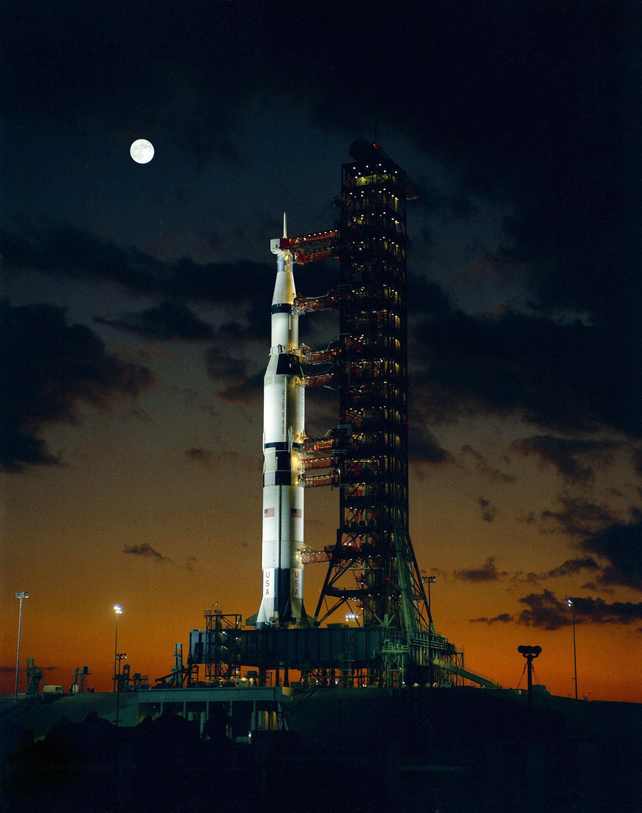

Explorateur Cosmos
Explorateur CosmosDesign & Aérodynamique des Fusées
Comment les ingénieurs conquièrent la résistance atmosphérique et la gravité pour atteindre l'espace

Principes Fondamentaux de Conception
Forme Aérodynamique
Le nez conique et le corps effilé minimisent la traînée atmosphérique lors de l'ascension. Les ailettes assurent la stabilité dans la basse atmosphère.
Principes de design aérodynamique
Rapport Poussée/Poids
Les fusées doivent produire une poussée supérieure à leur propre poids pour décoller. La Saturn V produisait 7,6 millions de livres de poussée au lancement.
Moteur de fusée en pleine poussée
Intégrité Structurelle
Des matériaux légers mais résistants comme les alliages d'aluminium et le titane supportent les vibrations intenses et les forces aérodynamiques.
Matériaux modernes pour fusées
Défis Aérodynamiques
Max Q (Pression Dynamique Maximale)
Point de stress aérodynamique maximal, environ 1 minute après le lancement quand la vitesse est élevée mais l'atmosphère encore dense.
Virage Gravitationnel
Manoeuvre d'inclinaison progressive utilisant la gravité terrestre pour changer de trajectoire sans gaspillage de carburant.

Stabilisation par Ailettes
Les ailettes fournissent une stabilité passive dans la basse atmosphère mais deviennent inefficaces dans l'espace où des systèmes de contrôle réactionnel prennent le relais.


Forces aérodynamiques pendant l'ascension
Évolution des Formes de Fusées
Fusée V-2 (1944)
Missile balistique précoce au design trapu optimisé pour la portée plutôt que le vol orbital.

Saturn V (1967)
Design élancé pour l'insertion orbitale, avec des profils aérodynamiques soigneusement étagés.
SpaceX Falcon 9 (2015)
Design moderne priorisant la réutilisabilité avec des ailettes à grille pour la descente contrôlée.